| [ Team LiB ] |
|
M15.1 Motivating ExampleConsider the control schematic diagram for the flow control loop shown in Figure M15-1. In practice, this loop contains a number of components, as detailed in Figure M15-2. Figure M15-1. Schematic instrumentation diagram for a flow controller.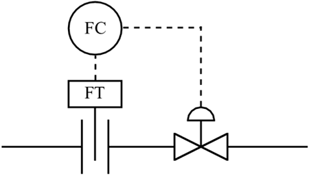 Figure M15-2. More detailed instrumentation diagram for a flow controller.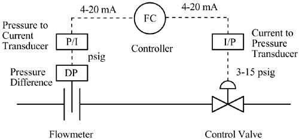 We can see that this loop consists of the following components.
Notice that this control loop is based on having an electronic analog controller. In practice, there are still a number of pneumatic analog controllers, where the input and output signals are pressure signals (typically 3–15 psig). Also, more of the "field equipment" (flow transmitters, etc.) are microprocessor-based, so often the signals to and from the controller are digital in nature. Now we further analyze each component of instrumentation in terms of its transfer function. FlowmeterWe can think of the input to the flowmeter as the actual flow rate of the process fluid. The output of the flowmeter is the pressure drop across the orifice plate. Here, we determine the gain of the flowmeter by simply considering the minimum and maximum flows and how they relate to the pressure drop 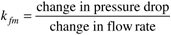 Consider a flowmeter where the flow rate varies from 0 to 5 gpm, while the pressure drop varies over a range of 0–2 psig. The flowmeter gain is then 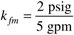 The dynamics of flowmeters are so fast compared with the process dynamics that we can normally neglect the time constant and assume that the transfer function is represented as a static gain. Also, in practice the gain is not constant because the pressure drop is a nonlinear function of the flow rate. This is discussed in depth in Section M15.2. DP CellThe DP cell measures the pressure drop across the orifice plate. We can think of the gain as being part of the flowmeter gain. The dynamics of differential pressure cells are so fast compared with the process dynamics that we can normally neglect the time constant and assume that the transfer function is represented as a static gain. Pressure to Current TransducerThe input to the P/I transducer is the pressure drop across the orifice plate. Assume that input to the P/I transducer is scaled so that 0–2 psig is 0–100% of the input range. The range of the output is 4–20 mA, so the gain for the P/I transducer is 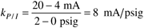 Again, the dynamics are so fast that they are normally neglected. Controller—Concept of Proportional BandThe input to the controller ranges from 4 to 20 mA and the output of the controller ranges from 4 to 20 mA. This might lead us to believe that the controller gain is one. We must recognize, however, that the controller gain, kc, is a tuning parameter. Remember that the proportional gain does not act on the actual input to the controller; it acts on the error [the difference between setpoint and the process measured variable (input to the controller)]. 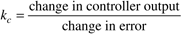 Often a controller uses proportional band (PB) as a tuning parameter, rather than proportional gain. The PB is defined as the range of error that causes the controller output to change by the full range (100%). We see that relationship can be written 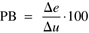 For example, if a change in error (De) of 10% causes a 50% change in controller output (Du), then the PB is 20. We recognize that the controller gain we are familiar with can be written 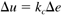 Notice also that Equation (M15.1) can be written 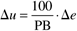 Comparing Equations (M15.3) and (M15.2), we see that 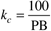 which leads to the following definition of PB: 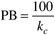 We have always used a simplified representation for a controller for analysis purposes. In practice, a controller performs the computations shown in Figure M15-3. Figure M15-3. Schematic of computations and scaling performed by a controller.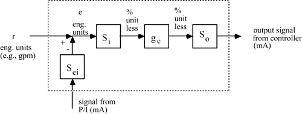 We see that the controller transfer function operates on signals that are scaled from 0 to 100% of range. The following scaling factors are used:
Current-to-Pressure TransducerThe input to the I/P transducer is a 4- to 20-mA signal and the output is a 3- to 15-psig signal. The I/P gain is then 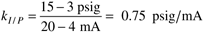 Control ValveControl valves will be covered in more depth in Section M15.3. Consider here the two cases: a fail-closed valve and a fail-open valve. Fail-Closed ValveIf the pressure signal to the valve changed, this valve would close, hence the term fail-closed. These valves are also called air-to-open. Consider a case where flow rate through the valve is 5 gpm when it is fully open (15-psig signal). Assuming that the valve is fully closed at 3 psig (or less), the valve gain is 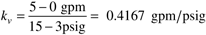 Fail-Open ValveIf the pressure signal to the valve changed, this valve would open, hence the term fail-open. These valves are also called air-to-close. Consider a case where the flow rate through the valve is 5 gpm when it is fully open (3-psig signal). Assuming that the valve is fully closed at 15 psig (or more), the valve gain is 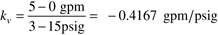 One of the most important things that a process engineer can do is to specify whether a valve is air-to-open or air-to-close. For example, if the control valve was manipulating the cooling water flow to a nuclear reactor, then a fail-open valve should be specified. Valve dynamics can become significant for larger valves. A laboratory valve may have a time constant of perhaps 1–2 seconds, a valve on a 3-inch process pipe may have a time constant of 3–10 seconds, and a valve on the Alaska pipeline may have a time constant of minutes. |
| [ Team LiB ] |
|